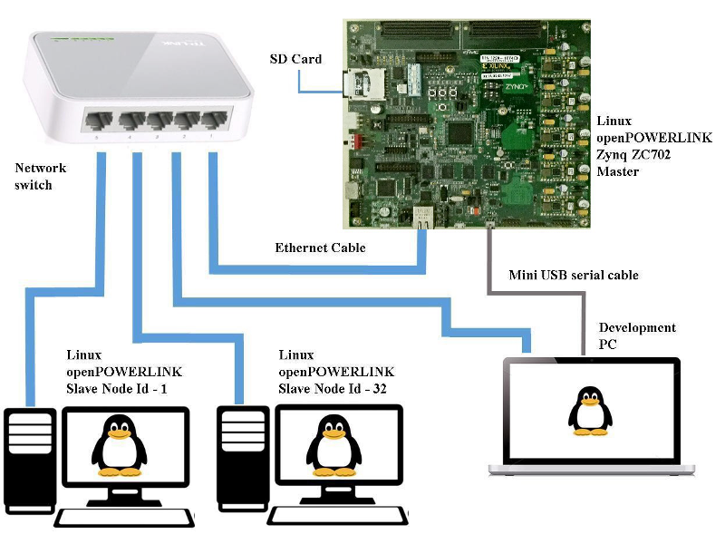
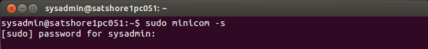
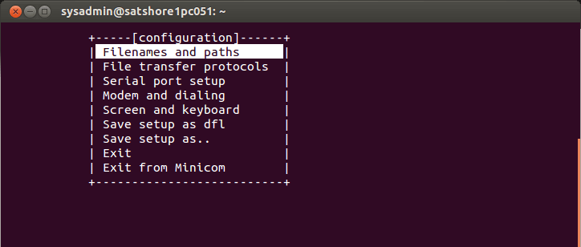
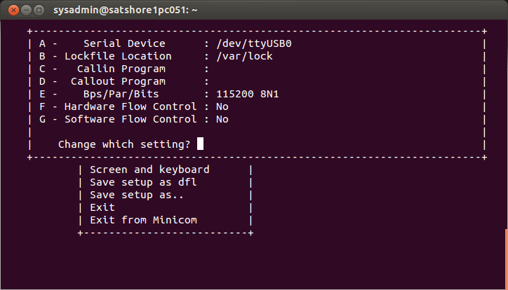
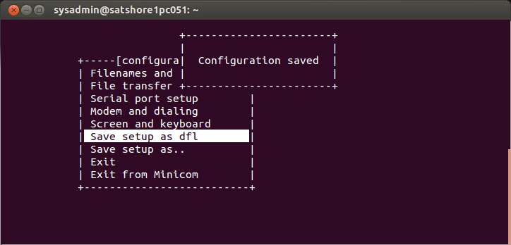
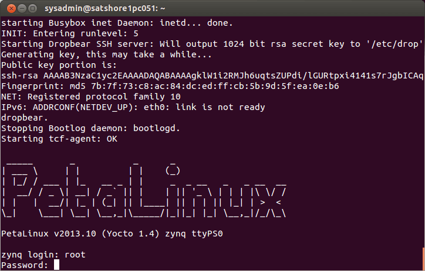

Quick Start Guide to run openPOWERLINK on Zynq Linux Master
Following section provides the steps on:
- How to run the pre-built binaries of openPOWERLINK Zynq Linux master?
- How to convert your X86 Linux PC into a simple openPOWERLINK slave device?
- How to test POWERLINK operation with the openPOWERLINK master and slave?
Network setup for openPOWERLINK on Zynq Linux Master

1. Hardware requirements
The hardware items required to run openPOWERLINK Linux MN demo on Zynq ZC702 are as follows:
-
1 Zynq ZC702 board to act as the openPOWERLINK Master
-
1 PC with serial terminal to connect to Zynq development board
-
Note: The example in this quick start guide uses a Linux system with minicom serial terminal for connecting to the Zynq development board
-
-
2 Linux PC to act as the openPOWERLINK Slave
-
1 Micro SD Card Reader
-
1 Micro SD Card
-
4 Ethernet Cables
-
1 Network switch
-
1 Mini USB serial cable
2. Software requirements
Following are the software requirements to run openPOWERLINK Linux Master demo on Zynq ZC702.
-
Ubuntu 12.04/14.04
3. Download the pre-built binaries
-
To download the pre-built binaries - click here
4. Run openPOWERLINK master demo application on Zynq ZC702
This section describes the steps to be carried out to run openPOWERLINK Linux demo on Zynq ZC702 development board.
-
To convert the SD card as bootable medium for Zynq - click here
-
To download the 14.7 pre-built binaries (Assuming cross compilation for the Linux is done using Xilinx ISE 14.7 toolchain) click here
-
Extract and copy the following contents from the downloaded folder into the boot partition of SD card
-
uramdisk.image.gz
-
u-boot.elf
-
fsbl.elf
-
devicetree.dtb
-
boot.bin
-
openPOWERLINK binaries (driver and application) from <openPOWERLINK_Directory>/bin
-
demo_mn_console
-
oplkdrv_kernelmodule_edrv
-
uImage (Replace the existing uImage with the cross compiled uImage from path: <Xilinx_zynq_directory>/linux-xlnx/arch/arm/boot).
Note: This is only to quickly boot the Linux binaries. The user is free to create their own bootable binaries for Zynq. Please refer http://www.wiki.xilinx.com/Zynq+linux for detailed steps.
-
To run the openPOWERLINK MN demo application
-
Insert the SD card into the Zynq ZC702 board and power up the board
-
Install minicom (sudo apt-get install minicom) on the development PC
-
From the PC terminal run minicom (sudo minicom -s)

-
Go to Serial port setup
-
Change the Serial Device as per the USB name (/dev/ttyUSB0)
-
Keep the hardware flow control settings to "NO"
-
Save setup as dfl and exit



-
Once autoboot finishes, enter the zynq login and password as "root"

-
mount the sd card using the following command
-
# mount /dev/mmcblk0p1 /mnt/card
-
Change to the kernel driver directory
-
# cd /mnt/card/oplkdrv_kernelmodule_edrv
-
Insert kernel driver using the following command
-
# insmod oplkemacpsmn.ko
-
Change to the demo_mn_console application directory
-
# cd /mnt/card/demo_mn_console
-
Run the application
-
# ./demo_mn_console -c /mnt/card/demo_mn_console/mnobd.cdc
5. Run openPOWERLINK slave demo application on Linux PC
This section describes the steps to be carried out to run openPOWERLINK Linux CN demo
Open a new terminal on the Linux PC to run openPOWERLINK slave:
-
Change to the driver daemon install directory on slave PC
-
cd <openPOWERLINK_Directory>/bin/linux/i686/oplkd-pcap/
-
Run the PCAP driver daemon using the following command
-
sudo ./oplkcnd-pcap
Open another terminal:
- Change to the slave application install directory on slave PC
-
cd <openPOWERLINK_Directory>/bin/linux/i686/demo_cn_console
-
Run the slave application using following command
-
sudo ./demo_cn_console
-
-
Repeat the openPOWERLINK slave demo application steps on the slave 2 (CN32) Linux PC